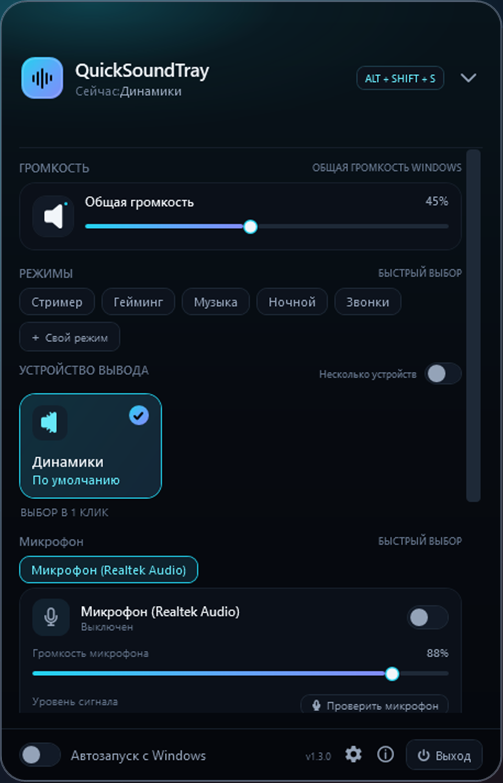

Как настроить громкость каждой программы отдельно в Windows
Игра орёт, а собеседника в Discord почти не слышно? В Windows можно задать свою громкость для каждого приложения. Показываем, где это спрятано, и как сделать то же самое быстрее.
Способ 1. Микшер громкости в Windows 11
- Нажмите правой кнопкой мыши на значок динамика в правом нижнем углу экрана.
- Выберите «Открыть микшер громкости». Откроется раздел Параметры → Система → Звук → Микшер громкости.
- В блоке «Приложения» у каждой запущенной программы, которая воспроизводит звук, свой ползунок.
Минус: в списке только программы, которые прямо сейчас воспроизводят звук, а сам раздел каждый раз приходится открывать через «Параметры».
Способ 2. Windows 10
- Нажмите правой кнопкой на значок динамика в трее.
- Выберите «Открыть микшер громкости»: появится классическое окно с вертикальными ползунками для каждого приложения.
- Альтернатива: Параметры → Система → Звук → Параметры устройств и громкости приложений. Там же можно выбрать для приложения отдельное устройство вывода.
Способ 3. В один клик через QuickSoundTray
QuickSoundTray — бесплатный компактный микшер в трее. Нажмите на его значок или ALT + SHIFT + S, и в одном окне появятся общая громкость, все приложения со своими ползунками и кнопкой отключения звука, а также устройство вывода и микрофон.
- громкость и mute для каждой программы;
- готовые режимы «Гейминг», «Стример», «Музыка», «Звонки» — набор громкостей одной кнопкой;
- автоприглушение: выбранные приложения становятся тише, пока вы говорите.

Частые вопросы
Почему программы нет в микшере громкости?
Windows показывает в микшере только приложения, которые сейчас воспроизводят звук. Запустите в программе любой звук — она появится в списке.
Сбрасывается ли громкость приложения после перезапуска?
Обычно Windows запоминает громкость приложения, но после обновления драйверов или смены устройства вывода настройки могут сброситься.